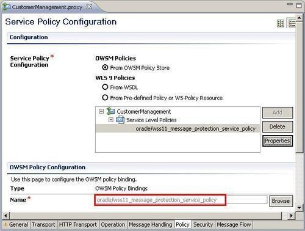
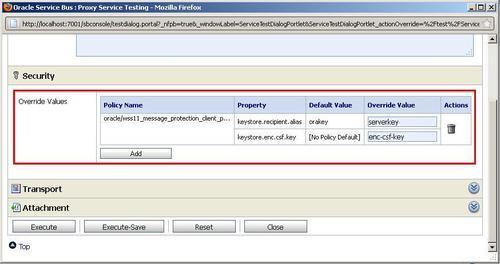
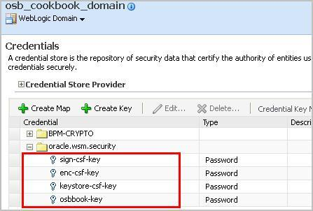
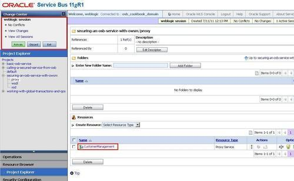

Apart from requiring the user to authenticate themselves to the proxy service, we can also enforce that a message be encrypted and signed using the message protection policies. In this recipe, we will enable the message protection to guarantee message integrity through digital signature and message confidentiality through XML encryption.
For this to work, we need to have the public key of the server certificate.
For this we will use the same simple OSB project as in the previous Securing a proxy service using Username Token authentication recipe.
Import the getting-ready project into Eclipse from \chapter-11\getting-ready\securing-a-proxy-service-with-message-protection.
The steps to execute in this recipe are the same as in the previous Securing a proxy service using Username Token Authentication recipe, only another policy needs to be selected. In the Eclipse OEPE, perform the following steps:
proxy folder of the securing-a-proxy-service-with-message-protection project. *message_protection_service* in the Name field and click Search.
Instead of oracle/wss11_message_protection_service_policy, we could also use oracle/wss10_message_protection_service_policy on this proxy service.
In the Service Bus console, perform the following steps for testing the service:
proxy folder) and click on the Launch Test Console icon (the bug). serverkey into the Override Value field for the property keystore.recipient.alias. enc-csf-key into the Override Value field for the property keystore.enc.csf.key.
With the message protection policy, the public key of the server is used to encrypt the SOAP body. OWSM will use the private key of the server to decrypt the SOAP body.
The CSF keys used in the Service Bus test console match the entries we have seen when setting up the credential store (WebLogic Domain | Security | Credentials)

Policies can also be directly manipulated on the OSB server through the OSB console.
To remove the old policy and add the new one for the message protection used in this recipe, perform the following steps in the Service Bus console:
proxy folder.
oracle/wss_username_token_policy service-level policies. *message_protection_service* into the Name field of the Search section and click Search. Replaced wss_username_token_policy by message_protection_service_policy into the Description field to document the change and click Submit.